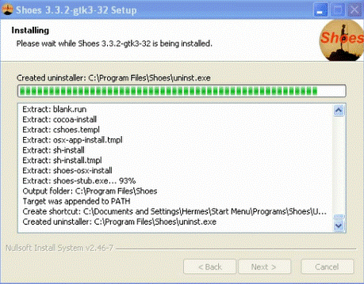
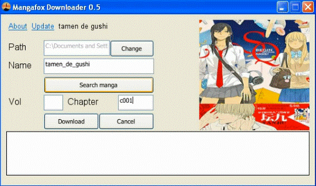
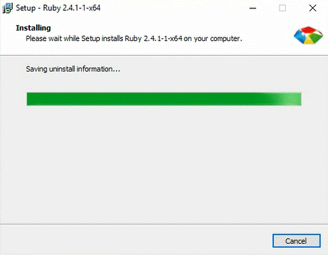
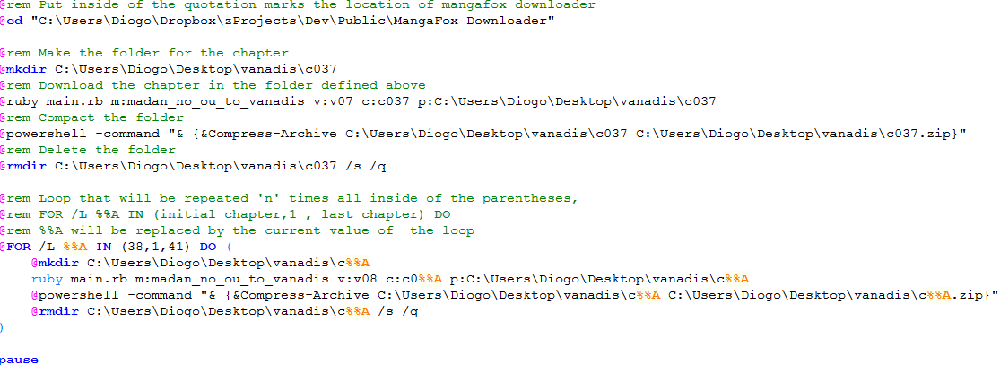
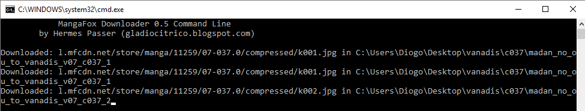
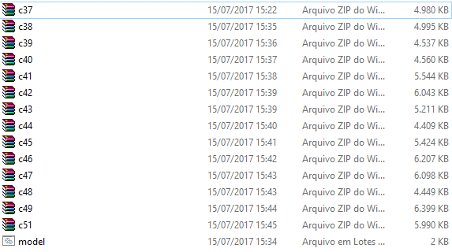

Mangafox Downloader
Download mangas of mangafox site.
Downloads: 0.5
Source code at GitHub
How to download mangas of mangafox
This program provide two ways to be used, by GUI that allows one download at a time and by command line, which allows create scripts to automatize the process allowing multiple downloads.
Download by GUI
First you need install Shoes. You can download the latest version (7/2017) clicking here or access the list of versions to be able to download for non-windows systems.

After that, you need download the Mangafox Downloader, de latest version is available in this page.
When the download is finished, just open normally. If the system asks what program you want to open it with then just open the program with Shoes).
To start you download, first you need specify the location where it will be downloaded, then type the name of manga and click in the Search manga button. If the manga exist the cover will appear and you may type the volume and chapter what you want download. (see About section in the program for more information of how type manga, volume and chapter names). If the chapter is not within any volume then leave the vol field blank.
The Download button start the download and the Cancel button stop the download.
Download by command line
First you need install Ruby. For windows users click here or here for other systems.
After, you need download and unzip the source code of Mangafox Downloader available here.
To download by command line you need call the main program script (main.rb) with Ruby.
Parameters:
Download: m:[manga_name], v:[vol_name] (optional), c:[chapter_name], p:[destination_path]
Help: h: | Update: u:
Example: ruby main.rb m:tamen_de_gushi c:c001 p:C:/users/hermes/manga
You can also can create batch files to automatize the process and download multiple chapters. To do this, you need to create a file and save it with the .bat extension. The code here.
Above you can see program working and the final result.
